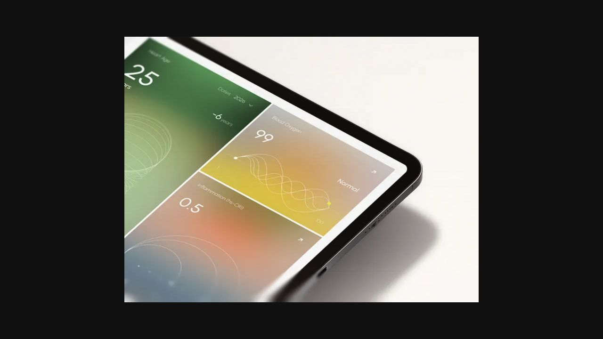
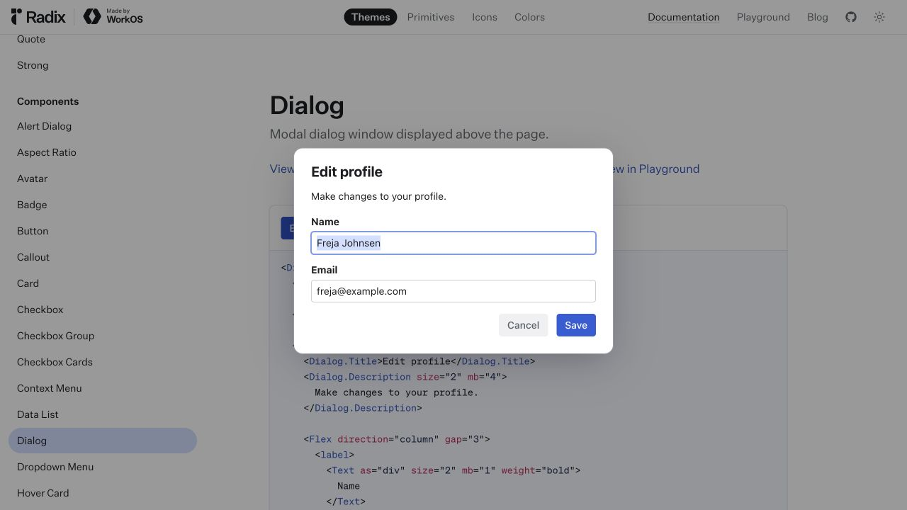
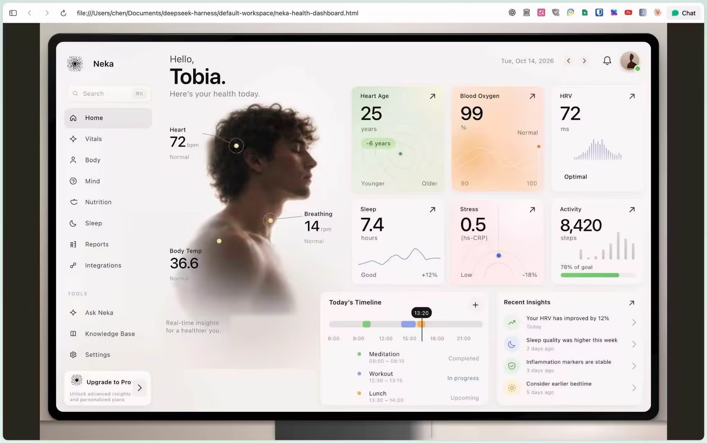

Neka 原作展示

Jack R. for RonDesignLab；公开作品展示的浏览器视口截图。
原始来源 ↗3 张公开来源截图和 1 张用户提供的示例。分开标注原作展示与后续实现，不将某个配色转成通用要求。

Jack R. for RonDesignLab；公开作品展示的浏览器视口截图。
原始来源 ↗Stripe；公开营销页的中文产品展示。
原始来源 ↗
WorkOS / Radix；示例姓名与邮箱来自公开组件样例。
原始来源 ↗
用户提供的本地 HTML 界面截图；与 Neka 原作不同，实现作者及方式未核实，不能标作原作。保留收到的原始截图。
来源：用户提供的参考截图